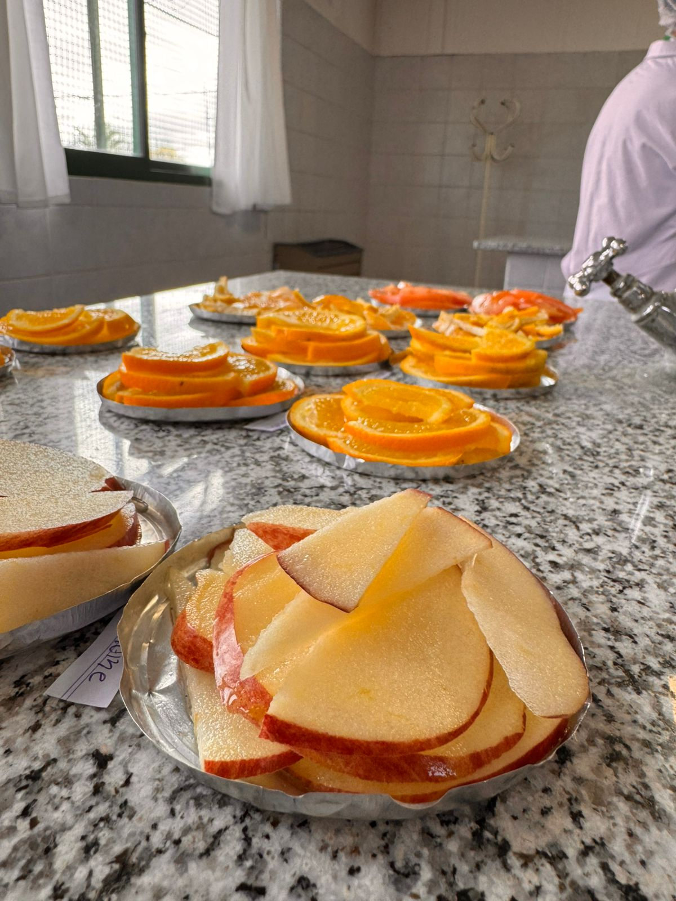
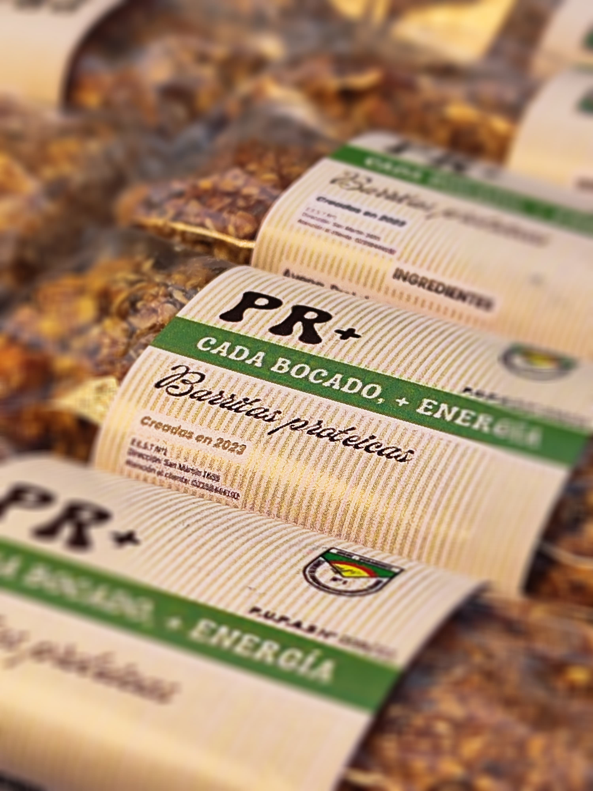
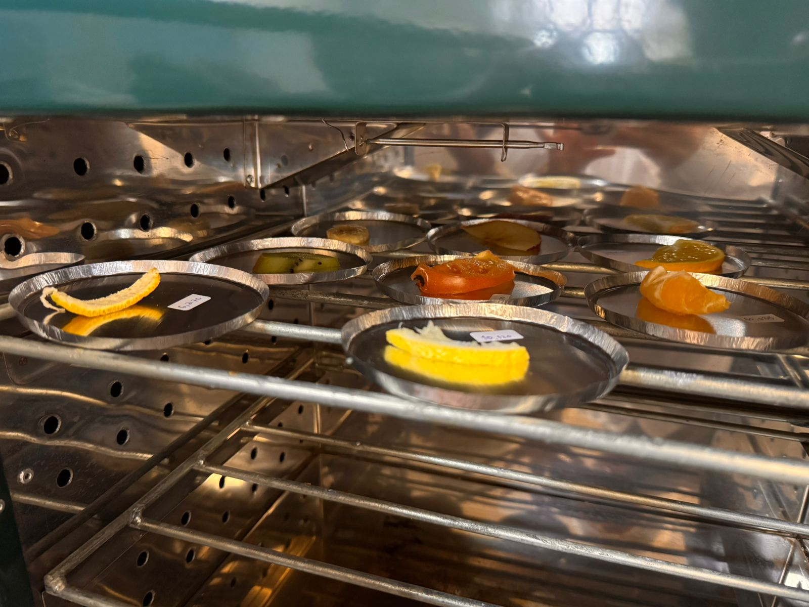

Prácticas Profesionalizantes
La formación de los estudiantes de 7mo año de la Escuela de Educación técnica N°1 de General Viamonte, quienes egresan con el título “Técnico en Tecnologías de los Alimentos. Se hacen Practicas de forma educativo, inclusivo y universal, Garantizando el derecho de los alumnos a trabajar en entornos reales. Vinculando la escuela con el sistema socio-productivo local regional y nacional.



COMPETENCIAS Y SABERES PROFESIONALES
Técnicas y de Proceso
El perfil del técnico en industrias alimentarias se estructura en tres grandes pilares operativos, legales y actitudinales. En el área productiva, domina la elaboración de alimentos —como lácteos, carnes y panificados—, aplica normas de inocuidad como BPM y HACCP, y maneja métodos de conservación y cálculos tecnológicos de costos y rendimiento. En el plano de control, ejecuta análisis fisicoquímicos y microbiológicos básicos, realiza evaluaciones sensoriales y asegura un muestreo normado. En el marco legal y de gestión, interpreta el Código Alimentario Argentino, gestiona la trazabilidad y asesora en microemprendimientos bajo estrictas normas de seguridad laboral. Finalmente, todo este saber técnico se sostiene sobre un sólido enfoque actitudinal, destacando el pensamiento crítico para resolver problemas de proceso, el trabajo colaborativo, la ética en la salud pública y el manejo eficiente de instrumental de laboratorio y tecnología.
.jpeg)
.jpeg)
.jpeg)
.jpeg)